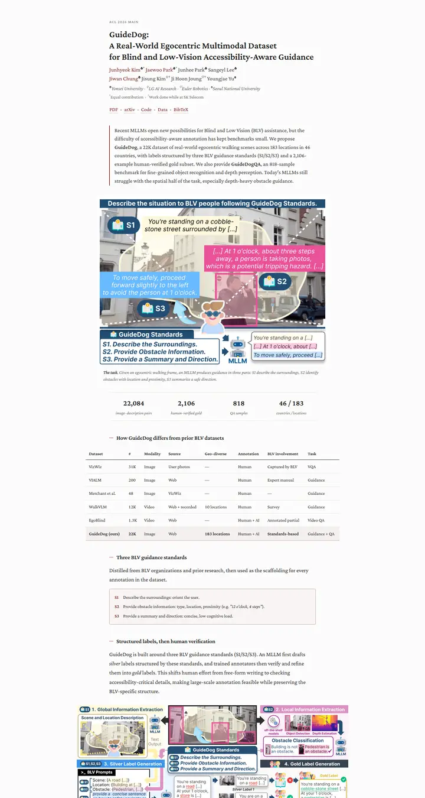
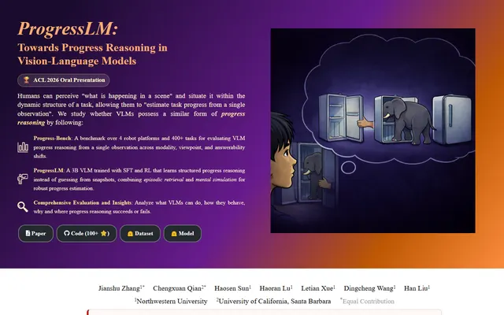

GuideDog: A Real-World Egocentric Multimodal Dataset for Blind and Low-Vision Accessibility-Aware Guidance
静かな学術書の一頁。セリフ体の一段組み、リンクには牛血色のインク、自分の行だけをほんのり染める表。

表示されたページと照合済みです。
選んだ理由
本のページのように読めます。幅の狭いセリフ体のカラム、えんじ色の著者リンク、罫線で区切ったアブストラクト、イタリックのスモールキャップスによる統計値の行、そして自分たちの行だけをハイライトした控えめな比較表があります。静かで個性があり、寸法の取り方も的確です。
以下の説明と DESIGN.md 本文は英語です。コーディングエージェントが同じ一つの版を読めるよう、翻訳していません。
概要
カラーパレット
タイポグラフィ
Crimson Pro
GuideDog: A Real-World Egocentric Multimodal Dataset for Blind and Low
Abstract · Method · Results · BibTeX — 0123456789
SFMono-Regular
GuideDog: A Real-World Egocentric Multimodal Dataset for Blind and Low
Abstract · Method · Results · BibTeX — 0123456789
余白と形
ページの構成要素
ガイドライン
似たスタイル

CRAFT: Training-Free Cascaded Retrieval for Tabular QA
淡い青焼きブルーの整った製品マニュアル。どの段階もそれぞれの色の縁をまとっている。

Efficient Self-Evaluation for Diffusion Language Models via Sequence Regeneration
青、すみれ、アプリコットの夜明け色に染まった角丸カードの整った積み重ね。署名はグラデーションのワードマーク。

FIGMA: Towards FIne-Grained Music retrievAl
温かみのある紙に刷った音楽誌。赤いキッカーの下に重厚な Newsreader の見出し、結果を示す大きな赤いセリフ数字、柔らかなクリーム色の枠に収まった図。

LaMI: Augmenting Large Language Models via Late Multi-Image Fusion
丁寧に作られた学会配布資料。Noto Serif の見出し、ネイビーの枠線ボタン、交互に現れる柔らかなグレーの帯。

PairCoder++: Pair Programming as a Universal Paradigm for Verified Code-Driven Multimodal and Structured-Artifact Generation
すっきりとした白い製品ページ。青いお知らせの帯、墨のように黒いピル型ボタン、柔らかな影のカードに載ったすべての図。

PROGRESSLM: Towards Progress Reasoning in Vision-Language Models
上はすみれ色から残り火色へ移る夕暮れのポスター、下は飾り気のない Distill の閲覧室。